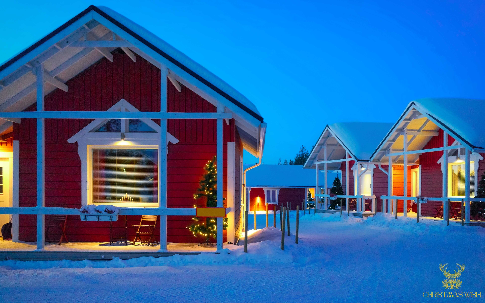
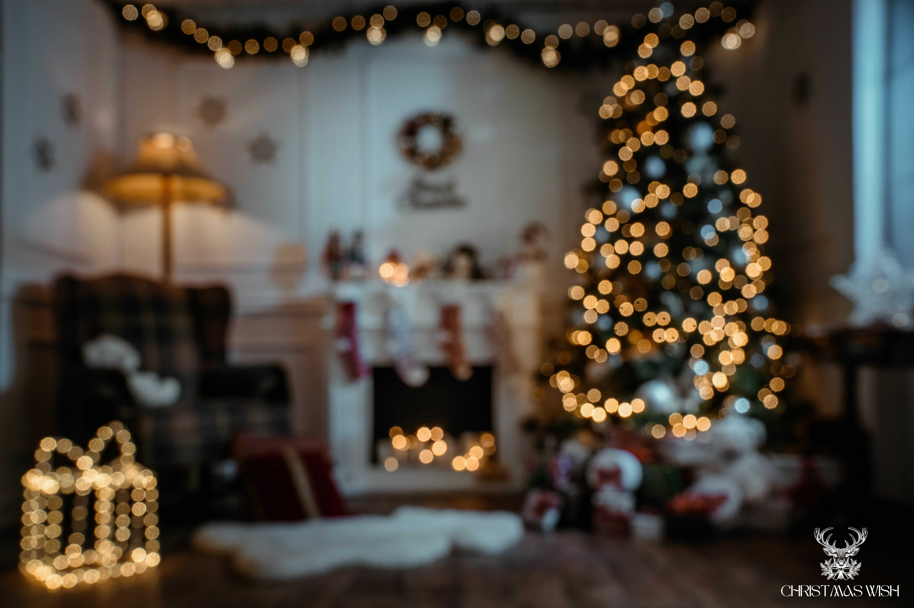
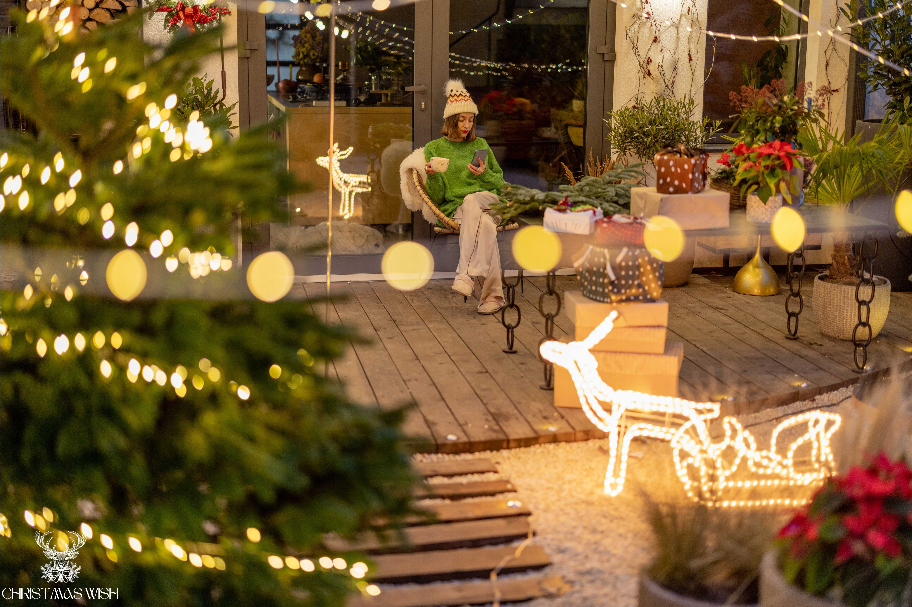
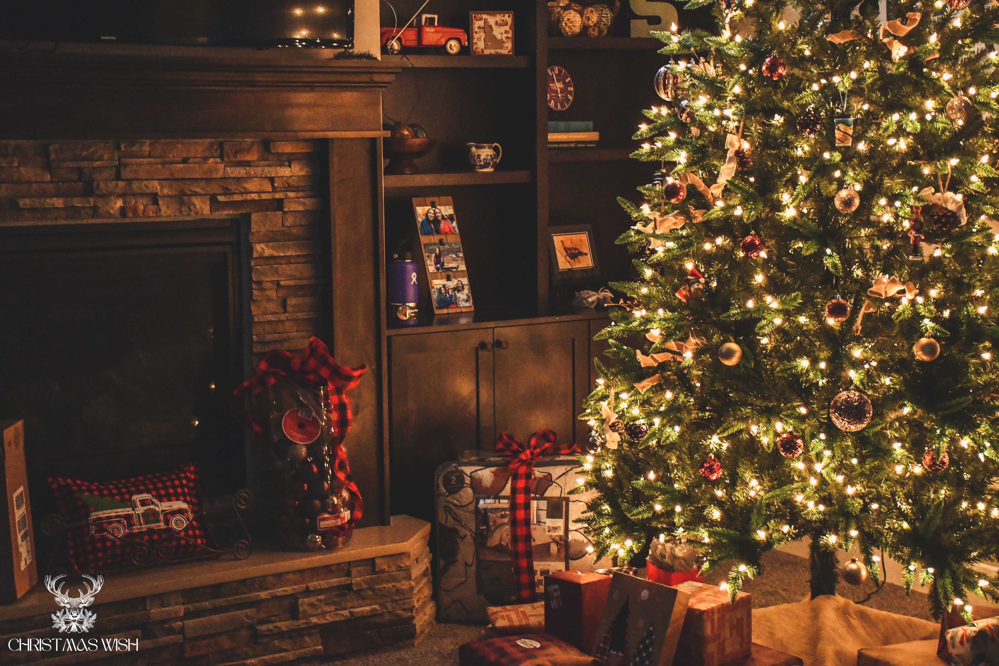
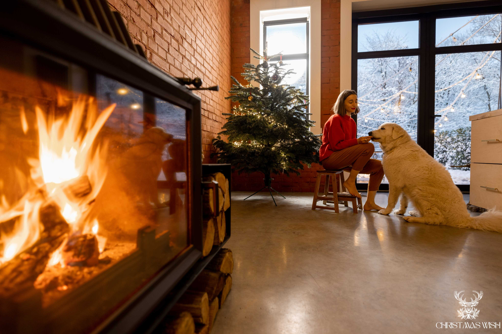

Christmas Wish je sestrinsko bratski projekt iz ljubavi koje smo pokrenuli davnih dana. Web stranica, Facebook zajednica i YouTube kanal posvećeni zimskoj atmosferi, božićnom ugođaju i svemu što dolazi s prvim pahuljama. Bez žurbe, bez buke. Samo onaj poseban osjećaj koji svi prepoznajemo.
Fritule, linzeri ili makovnjača? Glasaj i otkrij što bira ostatak Hrvatske. Tvoj glas pamti se u pregledniku — bez registracije i bez servera.
Glasovi se spremaju lokalno u tvojem pregledniku (localStorage).



Otvori prozorčić za današnji dan i pronađi blagdansku poruku, citat ili malu zanimljivost. Prozorčići koji tek dolaze strpljivo čekaju svoj trenutak.
Otvoreni prozorčići pamte se u tvojem pregledniku.
Ovdje donosimo našu zbirku zimskih ugođaja s našeg YouTube kanala.
Uključite se u prijenos uživo i doživite djelić prave magije direktno iz sela Djeda Božićnjaka.
Svi zabilježeni trenuci zimske čarolije na jednom mjestu.



Zadnje objave, novosti i preporuke direktno s naše Facebook zajednice.
Dobrodošli u novo izdanje naše zimske čarolije! Upravo smo podijelili najnovije fotografije s našeg putovanja na Facebooku, svakako ih pogledajte!
Približava se vrijeme najljepših mirisa iz kuhinje. Imamo novi recept za medenjake koji se topi u ustima.
Priče, razmišljanja i uspomene o Božiću, zimi i svemu što dolazi s prvim pahuljama.
Pravila privatnosti za Christmas Wish. Vaša privatnost nam je izuzetno važna. Svi podaci koje ostavite na našoj stranici čuvaju se u strogoj tajnosti, a koristimo ih isključivo za poboljšanje vašeg blagdanskog iskustva. Naša stranica prikuplja osnovne analitičke podatke kako bismo razumjeli što naši posjetitelji najviše vole čitati i gledati. Te podatke nikada ne prodajemo, niti ih dijelimo s neovlaštenim osobama. Za sve dodatne informacije, slobodno nam se obratite putem kontakt adrese. Uživajte u božićnoj čaroliji bez brige.
Komentari